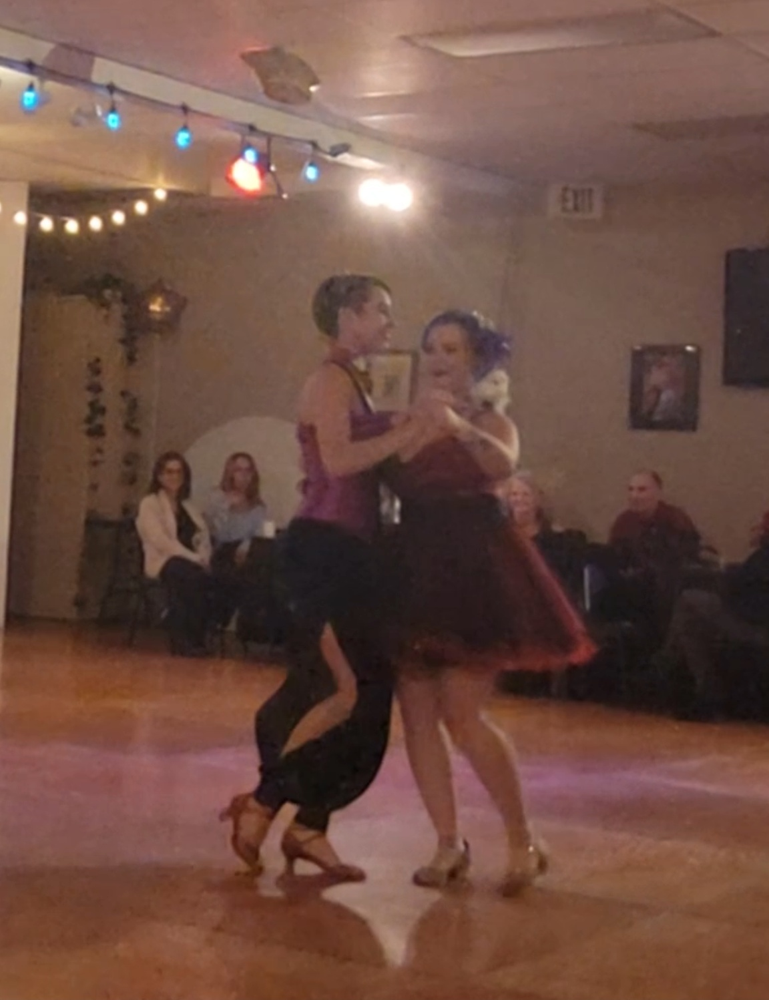
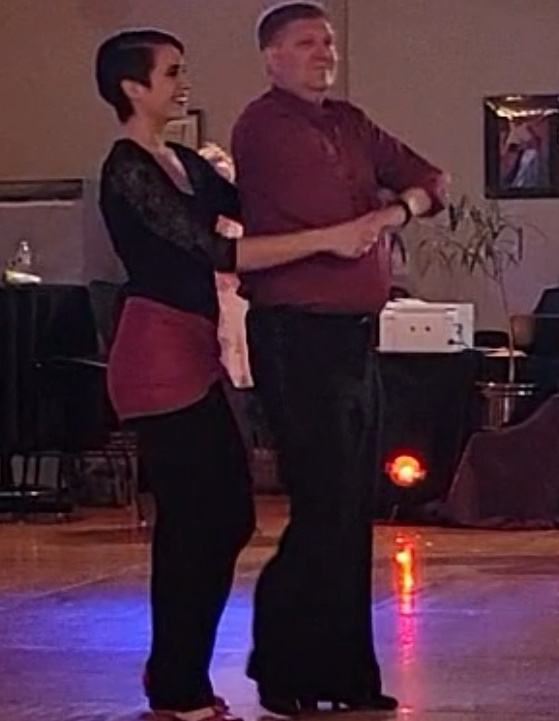

Explore how you can mix up your dance to best express yourself
“To queer” something means to challenge the heteronormativity of it in society. One way to do this in dance is with the roles dancers take.
In partnered dance in patriarchal societies, men tend to take a “leader” role, guiding and directing the movements, and women tend to “follow,” responding to and adding their own interpretation and flare to carry out the movements. This could be described as the leader drawing the picture and the follower coloring (mostly) within the lines.
When we queer partner dance, we can play with how gender relates to leader and follower roles, and if we even use these roles. For example, a dancer of any gender (woman, non-binary, man, etc) can take the leader or follower role. The dancers could switch roles at specific moments or constantly throughout the dance. There could be more than two people dancing together, simultaneously or at different times in the dance.
This isn't new. Many dance traditions, like blues and jazz have dancing that is not specific to any one gender. There are no rules, and sky’s the limit. Let’s step outside the box and get creative!
I am also happy to teach ballroom gender roles in dance. Again there are no rules!

Marlena (nonbinary) and a woman dance together, switching roles as leader and follower

Marlena (nonbinary) leads a man in bachata.